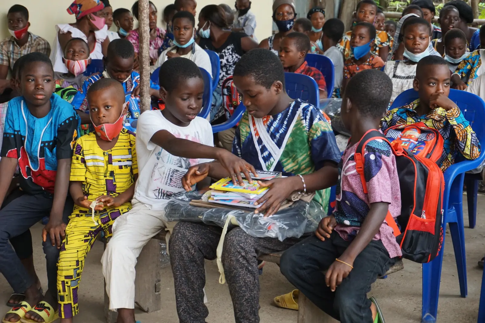
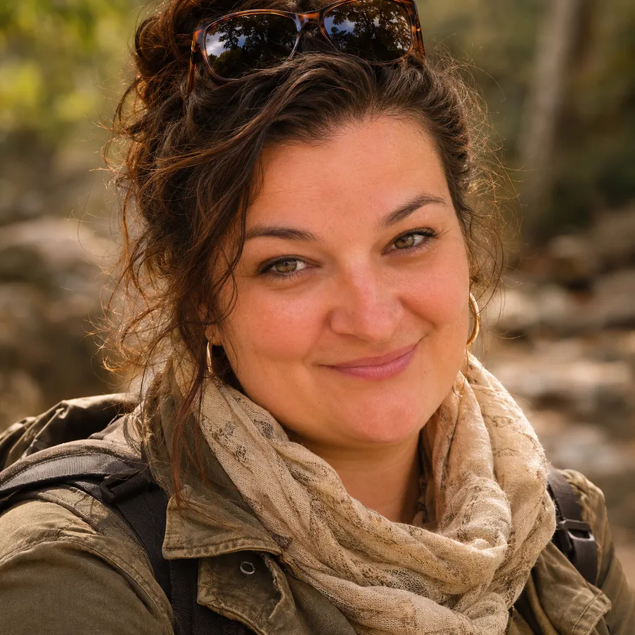

Notre histoire
Tout a commencé par 106 enfants.
À la rentrée 2021, le projet « Le chemin de l'école pour tous » a permis de scolariser 106 enfants de la région de Kpalimé, au Togo. Victoria Goepfert l'a coordonné sur le terrain, avec l'association Assilé-Assimé.


Pourquoi une association
Un projet se termine. Une association peut revenir.
De 2021 est née une conviction : il faut en Suisse une structure solide pour relier les gens d'ici aux projets de là-bas, dans la durée.
Une association peut faire ce qu'un projet isolé ne fait pas : revenir vérifier, réparer, rendre des comptes. C'est souvent ce qui manque une fois le chantier fini. Trails of Impact existe pour combler ce manque, un projet à la fois.
- Rentrée 2021
« Le chemin de l'école pour tous » : 106 enfants scolarisés.
- Octobre 2025
Première étude de terrain pour un forage à Akpato.
- Novembre 2026
Trails of Impact prend forme à Fribourg.
- 2027
Création officielle, puis l'étude des besoins à Akpato.
La galerie
La rentrée 2021, en images.
Quatorze photos du projet « Le chemin de l'école pour tous ». Touchez une photo pour l'agrandir.
Photos : Victoria Goepfert · rentrée 2021, région de Kpalimé · publiées selon notre charte des images
Nos engagements
Ce que nous promettons. Ce que nous refusons.
Nous promettons
- D'écouter avant d'agirChaque projet commence par une étude des besoins menée sur place.
- De finir ce que nous commençonsUn projet n'est terminé que lorsqu'il fonctionne sans nous.
- De tout publierY compris ce qui ne marche pas, et ce que nous ne savons pas encore.
- De revenir à 1, 3 et 5 ansPour vérifier, réparer si besoin, et vous le dire.
Nous refusons
- De montrer des enfants en détresse pour émouvoirNous montrons des personnes, pas des victimes.
- De lancer un deuxième projet trop tôtPas avant que le premier tienne debout.
- De décider à la place des personnes concernéesLe village et notre partenaire local ont le dernier mot.
- De dépenser un franc que nous ne pourrions pas justifierChaque dépense aura sa pièce justificative.

La fondatrice
Victoria Goepfert
Elle a coordonné des projets de terrain au Togo et au Sénégal. Éducatrice de l'enfance de formation, elle travaille aujourd'hui dans l'intégration socioprofessionnelle, à Fribourg.
Elle a fondé Trails of Impact pour donner une suite durable à 2021. Le comité fondateur est en train de se former, et deux places sont ouvertes.
Lui écrirevictoria@trailsofimpact.org
Prochaine étape
La suite du chemin.
De 2021 au projet en cours.